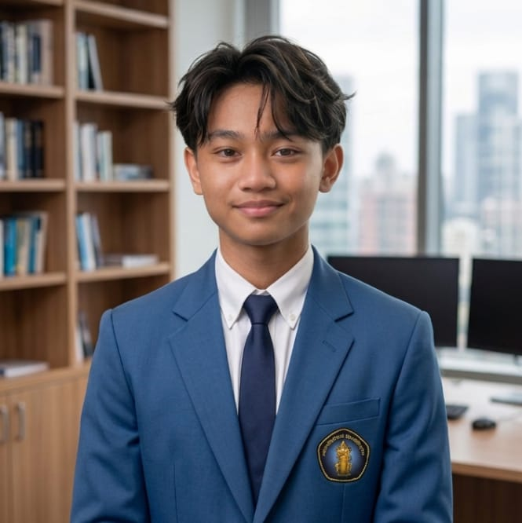

mahasiswa
Universitas Brawijaya
Saya Gatfan, mahasiswa baru Teknologi Industri Pertanian di Universitas Brawijaya yang juga menekuni dunia pengembangan perangkat lunak secara mandiri di luar bidang studi utama saya. Fokus saya mencakup pengembangan full-stack — mulai dari backend menggunakan Python dan FastAPI, frontend dengan HTML, CSS, dan JavaScript, hingga eksplorasi Internet of Things (IoT) menggunakan ESP32 dan MicroPython.
Salah satu proyek yang sedang saya kembangkan adalah aplikasi bank digital lengkap dengan sistem autentikasi JWT, serta sistem monitoring suhu berbasis IoT yang terhubung ke database dan menampilkan data secara real-time. Saya senang mempelajari cara kerja sebuah sistem secara menyeluruh, bukan sekadar menerapkannya, dan terus mencari tantangan baru untuk memperdalam pemahaman di bidang ini.
Di luar dunia teknologi, saya menikmati bermain badminton dan mengikuti perkembangan atlet-atlet bulu tangkis, dengan Kento Momota sebagai salah satu sosok yang saya kagumi.